-
"Эхо террора"
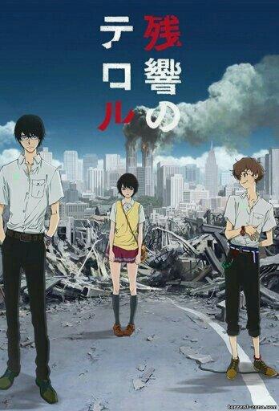 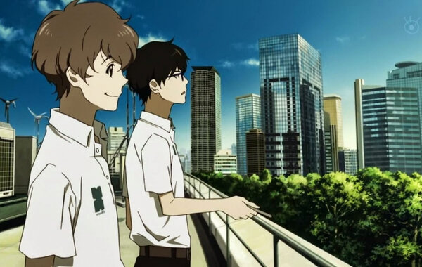Японскую столицу терроризирует группа «Сфинкс». Ее представители – два паренька в масках – появляются в соцсетях и открыто предупреждают о готовящихся сюрпризах. Вне экрана они называют друг друга английскими прозвищами Найн и Твелв, имитируя обычных школьников. Картинные и дерзкие теракты ставят на уши полицию, рвутся бомбы, ревут сирены… при этом ребята в масках все больше наглеют и начинают шифровать свои предупреждения, используя мировую классику. Как водится, террористы легко ломают любые системы безопасности, потому из Америки на помощь коллегам прибывает бригада ФБР во главе с гениальной хакершей Файв. Тем временем отставной детектив Сибадзаки, из-за острого ума вновь призванный на службу, замечает, что громкие дела «сфинксов» пока что обходятся без невинных жертв. Ребята словно хотят докричаться до общества и что-то сказать, причем власть имущие это понимают и убирают тех, кто задает лишние вопросы. А вот заокеанской специалистке плевать на чужие жизни, она точно играет свою игру и знает больше, чем говорит. Операции становятся все жестче, в ход идут заложники и провокации. Видя, что ставки растут, Сибадзаки начинает собственное расследование, стремясь докопаться до истины, но даже он не знает, чем все обернется в итоге…
-
"Мой сосед Тоторо"
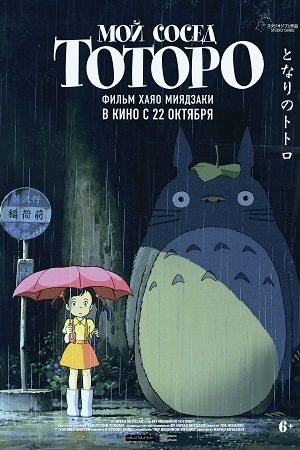
Отец с двумя дочерьми переезжают в деревню. Дом настолько старый, что близок к разрушению. В нём водятся духи — «чёрные чернушки», сусуватари. Мать семейства находится в больнице, и на время её болезни вся работа по дому ложится на плечи отца и старшей дочери Сацуки. Вскоре непоседливая младшая сестра Мэй встречает маленького лесного духа, который, сам того не желая, приводит её к более крупному духу, а потом и к большому То́торо — хранителю леса, живущему неподалёку. Позже и Сацуки знакомится с Тоторо, когда девочки ждут отца на автобусной остановке. При этом Тоторо, как и другие сказочные создания в мультфильме, невидим для взрослых. Тоторо дарит девочкам небольшой свёрток из бамбуковых листьев, в котором лежат семена. Девочки высаживают семена в огороде, а ночью Тоторо и духи помогают им прорасти. На следующий день из больницы сообщают, что мама не сможет вернуться домой на выходные. Расстроенная Мэй ссорится с сестрой и сама отправляется к матери, но по дороге теряется. Обеспокоенная Сацуки и жители окрестности везде ищут её, но безуспешно. Тогда Тоторо по просьбе Сацуки помогает её разыскать. Котобус относит девочек в больницу Ситикокуяма, и девочки видят, что с мамой всё в порядке. Во время финальных титров показано, как мама выздоравливает и приезжает в новый дом, а Мэй идёт в школу и заводит новых друзей[1].
-
"Клинок, рассекающий демонов"
 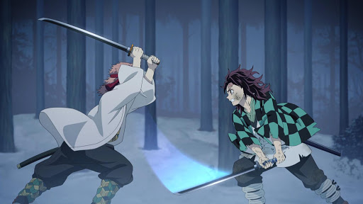
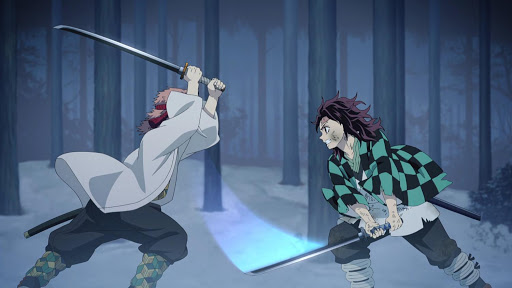
Эпоха «Тайсё» была полна неожиданностей. Много легенд нашли свое логическое подтверждение в те года. Люди давненько стали думать о присутствии демонов в гущах леса. И эти существа были крайне опасны и кровожадны. В ночное время суток они вели охоту на людей, убивая невинных граждан, демоны питались их плотью. Однако со временем эти легенды стали больше напоминать сказки. Подобных инцидентов в лесах не происходило, люди перестали верить. И было это зря, ведь несколько лет назад с отцом главного героя – Танджиро Камадо случилась неприятность. Тот пропал при странных обстоятельствах, а юноша взвалил на себя ответственность за семью. Когда Танджиро отправился продавать уголь, он не думал, что при возвращении домой застанет кровавую картину. Его родственники были убиты. Семья растерзана, и везде по дому виднеются следы крови. Единственный человек оставшийся в живых – сестренка главного героя. Она рассказала о демонах пришедших из леса в их дом. Оказалось, что девушка была ими обращена и скоро может стать убийцей. Герою истории нужно следить за поведением сестры и мстить за смерть матери и младшего братика.
-
"Ведьмина служба доставки"
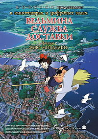 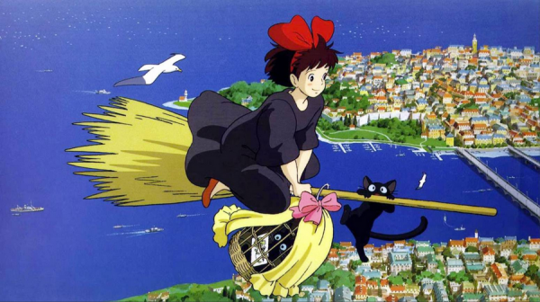Молодая ведьма Кики по достижении 13 лет должна прожить среди людей определённое время. Вместе с котом Дзидзи она отправляется в город, где знакомится с добрым пекарем, который помогает ей начать собственное дело - экстренную службу доставки. Новая работа знакомит Кики со множеством различных людей и предоставляет возможность обрести новых друзей и совершить массу всевозможных проделок.
-
"Обещанный неверленд"
 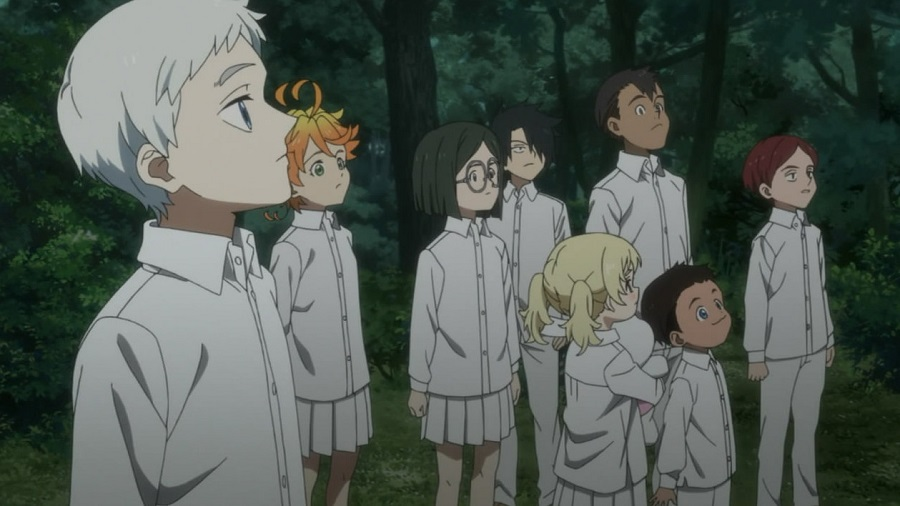
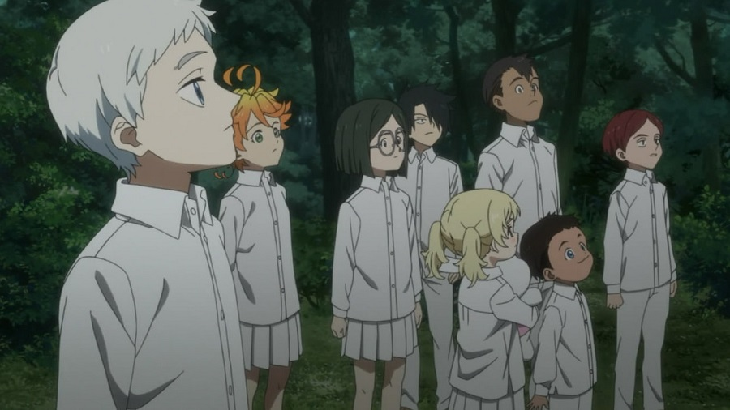
В приюте «Грейс Филд» под чутким надзором Мамы живёт группа детей разных возрастов. Самые умненькие — 11-летние Норман, Эмма и Рэй — лучшие друзья всю свою жизнь. Каждый ребёнок ждёт не дождётся усыновления, и когда он поедет в новую семью, а пока детишки играют целыми днями в догонялки и не знают бед и невзгод. Но в одну ночь Норман и Эмма узнают о приюте жуткую правду, и теперь у них остаётся выбор — сбежать или умереть.
-
"Рыбка Поньо на утёсе"
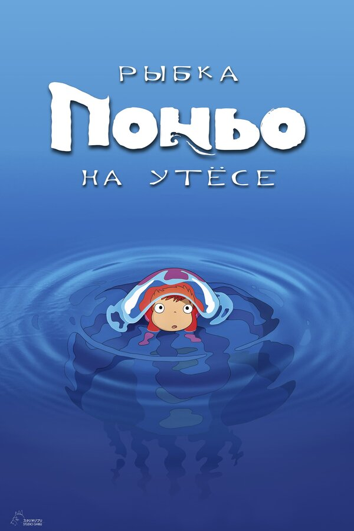 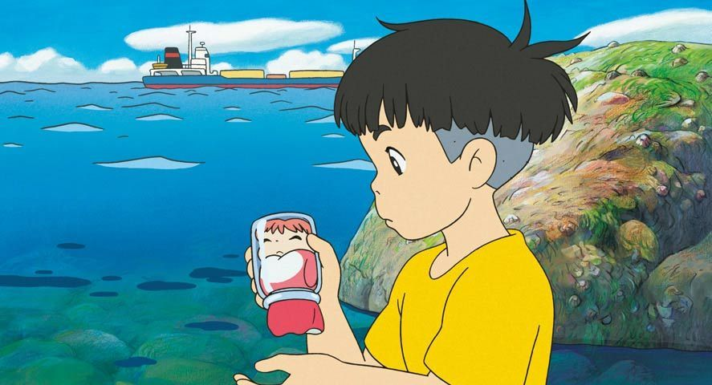Маленькая любопытная рыбка Поньо — дочь колдуна и прекрасной морской богини — уплывает из дома, чтобы понаблюдать за жизнью людей. Поньо застревает в банке и оказывается выброшенной на берег. Её подбирает пятилетний Сосукэ. Малыши привязываются друг к другу, и теперь у Поньо только одно желание — стать человеком.
Надеюсь, мои рекомендации помогли тебе! Сайонара!